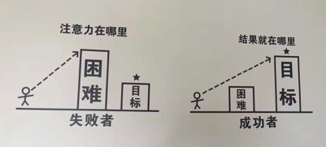

- 00 开篇词 带给你不一样的运维思考.md.html
- 01 为什么Netflix没有运维岗位？.md.html
- 02 微服务架构时代，运维体系建设为什么要以应用为核心？.md.html
- 03 标准化体系建设（上）：如何建立应用标准化体系和模型？.md.html
- 04 标准化体系建设（下）：如何建立基础架构标准化及服务化体系？.md.html
- 05 如何从生命周期的视角看待应用运维体系建设？.md.html
- 06 聊聊CMDB的前世今生.md.html
- 07 有了CMDB，为什么还需要应用配置管理？.md.html
- 08 如何在CMDB中落地应用的概念？.md.html
- 09 如何打造运维组织架构？.md.html
- 10 谷歌SRE运维模式解读.md.html
- 11 从谷歌CRE谈起，运维如何培养服务意识？.md.html
- 12 持续交付知易行难，想做成这事你要理解这几个关键点.md.html
- 13 持续交付的第一关键点：配置管理.md.html
- 14 如何做好持续交付中的多环境配置管理？.md.html
- 15 开发和测试争抢环境？是时候进行多环境建设了.md.html
- 16 线上环境建设，要扛得住真刀真枪的考验.md.html
- 17 人多力量大vs.两个披萨原则，聊聊持续交付中的流水线模式.md.html
- 18 持续交付流水线软件构建难吗？有哪些关键问题？.md.html
- 19 持续交付中流水线构建完成后就大功告成了吗？别忘了质量保障.md.html
- 20 做持续交付概念重要还是场景重要？看笨办法如何找到最佳方案.md.html
- 21 极端业务场景下，我们应该如何做好稳定性保障？.md.html
- 22 稳定性实践：容量规划之业务场景分析.md.html
- 23 稳定性实践：容量规划之压测系统建设.md.html
- 24 稳定性实践：限流降级.md.html
- 25 稳定性实践：开关和预案.md.html
- 26 稳定性实践：全链路跟踪系统，技术运营能力的体现.md.html
- 27 故障管理：谈谈我对故障的理解.md.html
- 28 故障管理：故障定级和定责.md.html
- 29 故障管理：鼓励做事，而不是处罚错误.md.html
- 30 故障管理：故障应急和故障复盘.md.html
- 31 唇亡齿寒，运维与安全.md.html
- 32 为什么蘑菇街会选择上云？是被动选择还是主动出击？.md.html
- 33 为什么混合云是未来云计算的主流形态？.md.html
- 35 以绝对优势立足：从CDN和云存储来聊聊云生态的崛起.md.html
- 36 量体裁衣方得最优解：聊聊页面静态化架构和二级CDN建设.md.html
- 37 云计算时代，我们所说的弹性伸缩，弹的到底是什么？.md.html
- 38 我是如何走上运维岗位的？.md.html
- 39 云计算和AI时代，运维应该如何做好转型？.md.html
- 40 运维需要懂产品和运营吗？.md.html
- 41 冷静下来想想，员工离职这事真能防得住吗？.md.html
- 42 树立个人品牌意识：从背景调查谈谈职业口碑的重要性.md.html
- 划重点：赵成的运维体系管理课精华（一）.md.html
- 划重点：赵成的运维体系管理课精华（三）.md.html
- 划重点：赵成的运维体系管理课精华（二）.md.html
- 新书 《进化：运维技术变革与实践探索》.md.html
- 特别放送 我的2019：收获，静静等待.md.html
- 结束语 学习的过程，多些耐心和脚踏实地.md.html
- 捐赠
11 从谷歌CRE谈起，运维如何培养服务意识？
2016年10月，谷歌云平台博客（Google Cloud Platform Blog）上更新了一篇文章，谷歌宣布了一个新的专业岗位，CRE（Customer Reliability Engineering），直译过来就是客户稳定性工程师。我看了介绍后，发现还是一个挺有意思的岗位设置，搜索之后发现，针对这个岗位国内还没有太多的解读。下面我们就来尝个鲜，一起来看一看。
CRE产生的背景
这个岗位出现的主要背景，还是越来越多的用户选择在云上开展自己的业务，很多企业和用户将业务从原来传统的自运维IDC机房迁移到云上。这样做其实就是选择相信公有云平台，但同时也就放弃了对底层基础设施的把控，甚至把企业最为核心的数据也放到了云上。说简单点，就是一个公司的身家性命都交给公有云了。
虽然绝大多数的公有云都宣称自己的稳定性多么高多么好，但是我们知道实际情况并非如此。
其实，我们可以看下Netflix，虽然业务在相对稳定的AWS上，但是自从在AWS上遇到过几次严重故障后，就开始自己做稳定性保障的功能，我们熟知的Chaos Monkey这只猴子就是这么来的，进而发展到后来的Chaos Engineering这样一整套体系。
可以看到，Netflix秉承Design For Faliure，从一开始就选择在变化多端且自己不可控的环境里，加强自己系统的健壮性和容错能力，而不是依赖任何云厂商的承诺。
不过，并不是任何企业都具备Netflix这样的技术能力把自己打造得这么稳定。所以，当云上不稳定的情况发生时，公有云客户通常是手足无措的。因为他并不了解出了什么状况，不知道是自己的问题还是云上基础设施或基础服务的问题，也不知道自己应该从哪里入手恢复业务，所以时间长了必然就会感到非常焦虑，各种不放心。
CRE岗位的职责
CRE出现的根本目的，就是消除客户焦虑，真正地站在客户的角度去解决问题，同时对客户进行安抚、陪伴和关怀。
通常的售后支持，都是你问什么问题，我就回答什么问题，能马上解决的就马上解决，不能解决的就转到后端处理，然后让客户等着，承诺多长时间内给出答复。这种流程标准，严格执行SLA规范，对于一般问题还好，但要是真的出现大问题就不行了。
业务挂了，我都火烧眉毛了，你还跟个机器人一样，我问啥你说啥；或者你排查下对我说跟你没关系，让我自己再检查下，再或者转给后端处理，让我先等着，这个体验就非常差了。
所以，CRE这个角色一定是站在客户角度解决问题。加入客户的“作战室”（War Room），和客户一起排查，问题不解决，自己不撤退；还会随时通报进展，必要的时候会将故障升级到更高的级别，寻求更专业的资源投入以共同解决；同时根据客户的不同反应进行不同方式的安抚。
CRE还会发挥谷歌多年积累下来的非常宝贵的线上运维经验，在日常就跟客户沟通传递一些稳定性保障的知识。CRE可以按照谷歌总结出来的类似SRE的标准规范，对客户线上系统进行稳定性标准评审，并给出专业的建议。如果客户同意遵守这样的标准规范执行，在后续出现故障时，CRE就完全可以按照非常成熟的SRE的运作模式去协作用户处理故障，这样就会大大提升CRE和客户的协作效率，为故障快速处理赢得更多宝贵时间。同时CRE也可以发挥更大的专业作用，而不是之前的对客户系统不熟悉，空有一身绝世武功，却使不上劲。
所以，CRE这个角色，既具备良好的专业技术能力，又有非常强的问题解决能力，同时还要具有优秀的客户沟通和关怀能力。背后还有谷歌多年的全球最佳运维实践SRE的经验和方法论支持，让CRE这个角色发挥出更加独特的作用，这一点可能是其它公有云厂商难以达到的。
从CRE谈谈做运维为什么要有服务心态
上面花了些篇幅对CRE做了一个整体的介绍。我个人的整体感受，CRE更多的是一个服务性质的岗位，最终是要对客户的满意度负责，所以我们可以看到他的职责里面处处充满了紧贴客户需求和痛点的工作内容。
我们可能一下子达不到CRE这么高大上的水平，但是日常工作中我们要不断提升自己的服务意识还是很有必要的。而且我观察下来，有时候我们日常工作中出现的很多沟通问题、协作问题甚至是技术问题，都是因为服务意识不够而导致的。
我总结了一下，是不是有服务心态，表现在我们的做事方式上，就是我们是否能够站在对方的角度考虑问题、解决问题。
具体怎么做，可以有很多方式，这里我给出我个人的几个建议。
1. 多使用业务术语，少使用技术术语
与合作部门沟通协作，特别是对于非技术类的业务部门，尽量多使用业务语言来表达。在讨论一个需求时，如果表达的都是API、缓存、数据库、消息队列等等这些专业术语，估计业务部门的同学肯定是跟不上我们的思路的，这样的沟通通常无法正常地进行下去，所以就会经常出现业务同学说业务的事情，技术同学说技术的事情，两边不能达成一致，矛盾就产生了。
这里需要强调的一点是，对于绝大多数的公司来说，业务一定是最重要的，技术是实现业务功能的一种手段和方式，所以一定是从业务角度出发考虑技术解决方案，而不是从技术角度出发让业务来适配技术。
那怎么从业务角度出发呢？就是我刚说的尝试用业务语言去沟通，用对方能够听得懂的表达方式去表达你的技术观点。为了让业务人员理解你的想法，就自然会用业务的思路去思考和解决问题了。这个需要一点点改变，可以先从尝试开始。
2. 学会挖掘问题背后的真正诉求
外部提出的一个问题，可能并不一定是真正的问题，而是问题的一个解决方案。
先举个之前我遇到的例子，有个部门给我们提了一个在服务器上安装翻墙软件的需求，结果我们的工程师就照着这个需求去做了，最后发现软件怎么调都启动不了，中间还牵扯到网络同事的配合，需要检查网络上的配置，最后就差动网络设备了。
后来我就去问，为什么要安装翻墙软件呢？一问才知道，有个业务需求是需要爬取Twitter、Instagram和Facebook上一些时尚达人的时间线信息的，需要部署一个这样的应用，然后能够对外访问，但是部署在我们机房内部发现不行（肯定不行啊），所以就建议尝试装一个翻墙软件看看是不是能访问出去。
这么一问，就发现安装翻墙软件不是真正的需求，真正的需求是能够访问到海外站点。看问题的角度不同，解决方案也就不一样了。
因为我们有公有云的海外节点，这样的需求，我们直接将应用部署在海外节点就可以了，然后从申请资源、部署上线到调测通过，30分钟搞定。
这种情况非常常见，也是日常团队协作中最容易出现的问题，很多矛盾都是因为这种原因导致的。如果按照上述不假思索的方式去做，极有可能是没有结果，或者是结果无法让人满意。如果你很努力很认真地做了很多事情，但却无法得到对方的认可，那就太令人沮丧了。
遇到类似问题，可以不着急动手做，先多问自己和对方几个问题，比如：
- 为什么要这样做？
- 谁要求做这件事情的？
- 这样做的目的是什么？
- 这样做是为了解决什么问题？
这一点其实也是站在对方角度去考虑，去思考对方要解决的问题是什么，而不是解决我们的问题。通常情况下，两三个问题后，一般就会暴露出背后最原始的那个需求了。正所谓“磨刀不误砍柴工”，问题和背景搞清楚了，思路和方案就是顺其自然的事情了。
3. 解决问题的时候关注目标，而不是聚焦困难
我尝试写了一段话想来分享我的观点，但是读来读去感觉有点太鸡汤。所以还是上一张图，这个是我16年去腾讯交流的时候，在腾讯办公区拍到一张照片，对我启发很大。
两种不同的思考问题的方式，带给人的感受也是完全不一样的。
道理还是需要我们自己悟明白的，所以文字也好，图片也罢，期望对你也有所启发。

近些年，随着云计算技术的深入发展，公有云事业也不断拓展，运维领域的分工也在不断地精分细化，而每个细分领域对专业技术的要求也越来越高，专业的服务化程度也越来越高。我想这是一个好现象，让原来非常模糊的运维行业范畴变得越来越清晰、越来越具体。
对于我们运维来说，这样的发展既是机遇，也是挑战。一方面我们要不断提升自己的技术能力，另一方面也要注意自身服务意识的培养，让自己的能力得以发挥，创造更大的价值，获得更好的回报。
对于今天的内容你有怎样的共鸣和思考，欢迎你留言与我一起讨论。
如果今天的内容对你有帮助，也请你分享给身边的朋友，我们下期见！
© 2019 - 2023 Liangliang Lee. Powered by gin and hexo-theme-book.